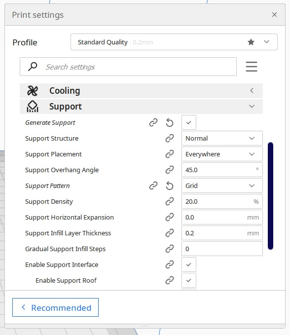

3D Printing
As I embarked on my exhilarating journey into the captivating world of 3D printing, I was enveloped by a kaleidoscope of emotions, a mix of excitement, curiosity, and a hint of apprehension. The mere thought of transforming digital designs into tangible, three-dimensional objects filled me with a sense of wonder and possibility.
Discovering Cura: A Gateway to Creativity
My initial foray into this realm led me to the discovery of Cura, a beacon of light in the sea of 3D printing software options. With its intuitive interface and robust features, Cura emerged as the ideal companion on my quest to unlock the secrets of additive manufacturing. As I launched Cura for the first time, its sleek design and user-friendly layout welcomed me, hinting at the boundless potential that lay ahead.
Exploring Cura
Cura is one of the most popular slicing software used in 3D printing. Start by downloading and installing Cura on your computer. Then, familiarize yourself with the user interface, settings, and features. Cura provides a range of options for customizing prints, such as layer height, infill density, print speed, and support structures.
Exploring the Vast Terrain of Features

Armed with determination and an insatiable thirst for knowledge, I embarked on a journey of exploration within the confines of Cura's digital landscape. Guided by tutorials and expert advice, I delved deep into its arsenal of features, each click and adjustment propelling me further down the path of mastery. From fine-tuning print settings to optimizing support structures, every discovery was a stepping stone towards unlocking the full potential of my 3D printer.
Unveiling the Art of Slicing: Precision in Every Layer
Amidst my exploration, one aspect of the 3D printing process stood out like a beacon of precision—the art of slicing. Like a digital sculptor meticulously carving away layers of virtual clay, slicing transformed my intricate digital designs into a series of meticulously crafted layers ready for the physical realm. With each model sliced and previewed within Cura's virtual workspace, I gained a newfound appreciation for the intricate dance of algorithms and mathematics that underpinned this mesmerizing process.
Overcoming the Trials and Tribulations
However, no journey is without its share of trials and tribulations. Along the winding path of discovery, I encountered challenges that tested my resolve and patience. From failed prints to misaligned layers, each setback served as a humbling reminder of the complexities inherent in the 3D printing process. Yet, with unwavering determination and a spirit undeterred by adversity, I pressed on, armed with the invaluable lessons gleaned from each setback.
Experimentation: Pushing the Boundaries of Possibility
Armed with newfound knowledge and a resilient spirit, I embarked on a journey of experimentation, daring to push the boundaries of what was deemed possible. From intricate figurines to functional prototypes, each print became a canvas for creativity, a testament to the limitless potential of 3D printing. With Cura as my trusted guide, I ventured into uncharted territory, exploring new techniques and pushing the limits of my imagination with each passing day.
Supporting the Structure
Types of Supports:
Lattice Support:
This is the most common type. It consists of a grid-like structure that fills the space under overhangs. While effective, it can be time-consuming to remove and might leave marks on the model's surface.
Tree-like Support:
This support structure resembles branches reaching up to hold overhangs. It uses less material and is easier to remove, but might not be suitable for all overhang shapes, particularly flat ones.
Completion of the Print Job
The Final Print Layer:
Once the final layer is printed, the extruder head will typically park and the printing platform will move to its home position. The printer might beep or display a message indicating the print job is complete.
Cooling Down:
Most printers will have a cooling period after the print job is finished. This allows the printed object to solidify completely before you remove it. It's important to avoid touching or moving the object during this time as it can warp or become damaged.